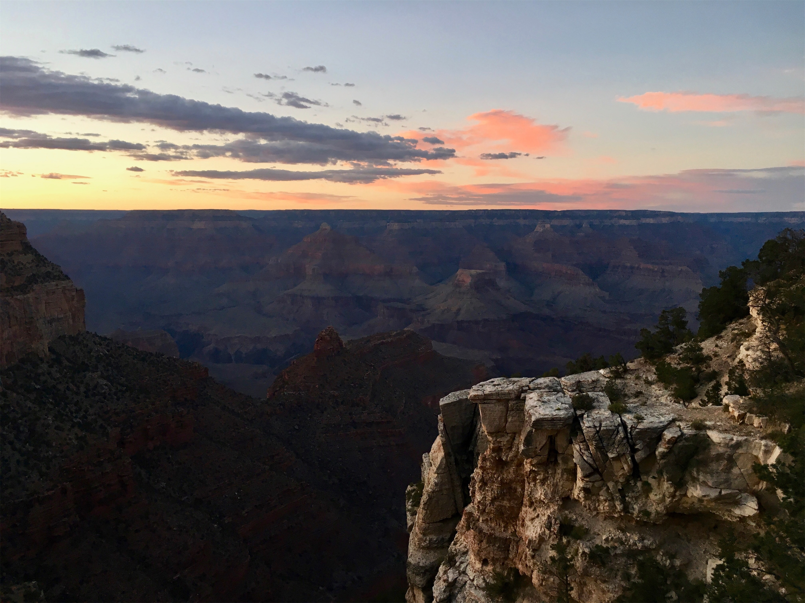
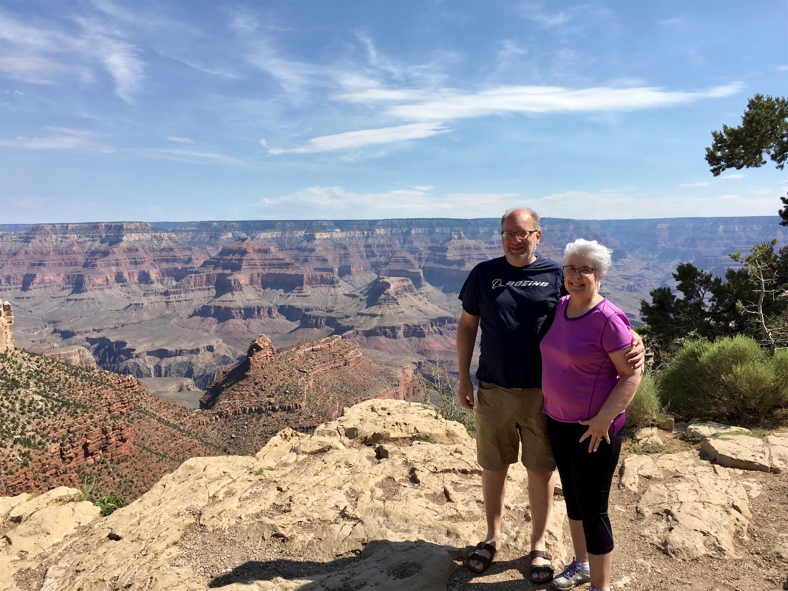

Thursday, Jun 14, 2018, 10:18 AM MST
Grand Canyon South Rim Visitor Center, Williams, AZ, United States
81°F Mostly Cloudy
81°F Mostly Cloudy
![]()
6/13 Petrified Forest NP, AZ -> Flagstaff, AZ 113 mi, 3 hr
6/14 Flagstaff, AZ -> Katchina Lodge, AZ 81 mi, 1.5 hr
Trip Total: 2,959 mi
We headed west on I-40 to Flagstaff, AZ, which parallels what’s left of historic Route 66. We stopped for lunch in Winslow, AZ. Deb and I did stand on a corner, but we didn’t see any girls in a flatbed Ford :) We didn’t realize how much of our trip follows 66, and we’d like to read up on the impact of the Interstate on the communities along it sometime. It clearly devastated many, and most retain the retro vibe. Flagstaff is at about 7,000 feet, and gave us some temperature relief. The next morning we headed north on scenic highway 180, which started with dense green forest and ended in desert-like scenery as we approached the south rim of Grand Canyon.
The Grand Canyon is one of those places where you can hear descriptions and see pictures, but nothing prepares you for the immense breadth and depth you see when standing on the rim. We were here before with the boys, sometime around 2000, but we didn’t stay in the park. This time, Deb and I stayed overnight in the Village, at Katchina Lodge, with a room view that was about 50 ft from the rim. We hung out in the fancy El Tovar lobby to people watch, had a southwestern dinner at the Bright Angel Lodge’s Arizona Room, and had a good breakfast at that lodge too. The architect for the historic buildings was Mary Elizabeth Jane Colter, who was a school teacher from St. Paul. We attended a Park Ranger talk right outside our room about the condor, and the efforts to bring it back from the brink of extinction in California and in the Canyon. There were only 22 left in the world at one time, and now there are almost 500. They have a 10 ft wingspan, and only lay one egg every other year. We set a walking record going up and down the rim trail, seeing ever-changing breathtaking views and colors.
The Canyon was hot and hazy when we arrived, and they had a rare thunderstorm for this time of year, which cooled things down and made it really windy. The weather in the morning was perfect for yet more walking. We were worried about crowds, since it is the 2nd most popular park with 5 million visitors a year. Overall, it was moderately crowded. We got right in with a special lane for annual passes, but road construction slowed us down (it took 45 min to leave the park this morning). Parking is really tough, but there is free shuttle bus service. We had no problem at the restaurants. The rim trail was fairly crowded with people of all ages and from all over the world. This park is really a whole city.
We can’t sum it up better than this:
“The Grand Canyon fills me with awe. It is beyond comparison — beyond description; absolutely unparalleled throughout the wide world … Let this great wonder of nature remain as it now is. Do nothing to mar its grandeur, sublimity and loveliness. You cannot improve on it. But what you can do is to keep it for your children, your children’s children, and all who come after you, as the one great sight which every American should see.”
-- President Theodore Roosevelt upon visiting the canyon in 1903


